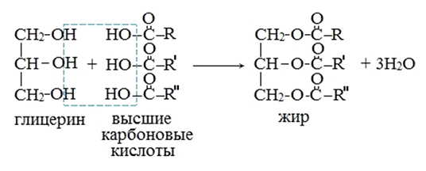

Эфиры были впервые получены в середине XVIII века Л. де Лаурагваисом, который в процессе перегонки уксусной кислоты с винным спиртом, получил жидкость отличную по запаху от исходных веществ. СН3-СООН + С2Н5ОН = СН3СООС2Н5 + Н2О
Аналогичным способом был получен в 1777г. Этиловый эфир муравьиной кислоты.
Чуть позже слово «эфир» впервые появилось в работе Карла Шееле «Исследования и заметки об эфире» (1782г). Он же указал, что катализатором реакции образования эфира является минеральная кислота.
Сложные эфиры низших карбоновых кислот и простейших спиртов - бесцветные летучие жидкости, часто с приятным фруктовым запахом; сложные эфиры высших карбоновых кислот - твердые бесцветные воскообразные вещества, практически лишенные запаха, их температура плавления зависит как от длин углеродных цепей ацильного и спиртового остатков, так и от их структуры.
Сложные эфиры труднее растворимы в воде, чем образующие их спирты и кислоты. Так, этиловый спирт и уксусная кислота смешиваются с водой во всех отношениях, тогда как этилацетат трудно растворим в воде. При растворении в воде образуют два несмешивающихся слоя (две фазы), при этом эфир имеет меньшую плотность и находится сверху. Это позволяет использовать сложные эфиры в аналитической химии как экстрагенты при экстракции различных веществ (например, изотопов) из водных растворов. Сложные эфиры плохо растворимы в воде, но хорошо - в органических растворителях (спирте, ацетоне и др.).К сложным эфирам относятся также жиры, воск.
Бертло вклад в изучение органической химии.
Пьер Эже́н Марселе́н Бертло́ (25 октября 1827, Париж — 18 марта 1907, Париж) — французский физико-химик, общественный и политический деятель. Пионер исследования кинетических реакций, один из основоположников органического синтеза и термохимии, автор работ по истории науки.
В 1851 году Бертло начал свои работы по синтезу органических соединений из простых веществ. Бертло синтезировал многие простейшие углеводороды —метан, этилен, ацетилен, бензол, а затем на их основе — более сложные соединения. В 1853—1854 годах взаимодействием глицерина и жирных кислот Бертло получил аналоги природных жиров и таким образом доказал возможность их синтеза. Попутно он установил, что глицерин — трёхатомный спирт. Принципиальное значение имел синтез этилового спирта гидратированием этилена в присутствии серной кислоты (1854); до этого этиловый спирт получали только брожением сахаристых веществ. Этими синтезами Бертло нанёс окончательное поражение представлениям о «жизненной силе».
В 1861—1863 годах Бертло совместно с французским химиком Л. Пеан де Сен-Жилем опубликовал исследования скорости образования сложных эфиров из спиртов и кислот, занимающие видное место в истории химической кинетики
Реакция Бертло — синтез жиров в результате реакции этерификации между глицерином и высшими карбоновыми кислотами.
В 1854 г. французский химик М. Бертло провел реакцию этерификации, т.е. обратный синтез жиров из продуктов их омыления. И таким образом впервые синтезировал жир.

"Химия - интересная наука" - Место, где вы можете получить теоритическую и практичесткую информацию о замечательной науке - химии.